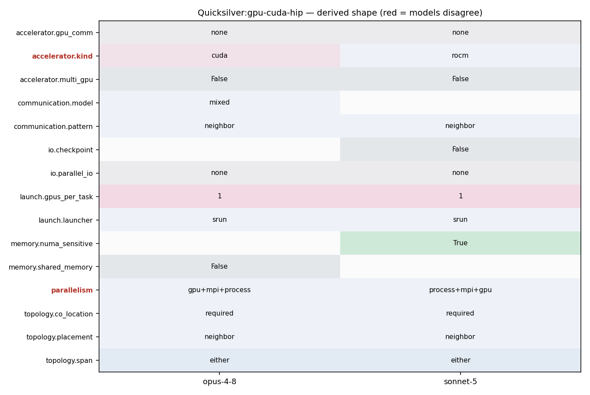

CUDA/HIP build (make with -DHAVE_CUDA or -DHAVE_HIP -DHAVE_MPI); launched with srun/jsrun, one GPU per rank
srun -n<N> ./qs -i <deck>.inp -I <i> -J <j> -K <k> (built with HAVE_MPI, HAVE_CUDA or HAVE_HIP; 1 MPI rank per GPU)
192 if( runKernel ) 193 CycleTrackingKernel<<<grid, block >>>( monteCarlo, numParticles, processingVault, processedVault ); 194 195 //Synchronize the stream so that memory is copied back before we begin MPI section 196 gpuPeekAtLastError(); 197 gpuDeviceSynchronize(); 198 #endif
261 monteCarlo->particle_buffer->Buffer_Particle(mcb_particle, buffer ); 262 } 263 264 monteCarlo->particle_buffer->Send_Particle_Buffers(); // post MPI sends 265 266 processingVault->clear(); //remove the invalid particles 267 sendQueue.clear();
89 { qs_assert(MPI_Gather(sendbuf, sendcount, sendtype, recvbuf, recvcount, recvtype, root, comm) == MPI_SUCCESS); } 90 void mpiBcast( void* buf, int count, MPI_Datatype datatype, int root, MPI_Comm comm) 91 { qs_assert(MPI_Bcast(buf, count, datatype, root, comm) == MPI_SUCCESS); } 92 void mpiIrecv(void *buf, int count, MPI_Datatype datatype, int source, int tag, MPI_Comm comm, MPI_Request *request) 93 { qs_assert(MPI_Irecv(buf, count, datatype, source, tag, comm, request) == MPI_SUCCESS); } 94 void mpiRecv(void *buf, int count, MPI_Datatype datatype, int source, int tag, MPI_Comm comm, MPI_Status *status) 95 { qs_assert(MPI_Recv(buf, count, datatype, source, tag, comm, status) == MPI_SUCCESS); } 96 void mpiIsend(void *buf, int count, MPI_Datatype datatype, int dest, int tag, MPI_Comm comm, MPI_Request *request) 97 { qs_assert(MPI_Isend(buf, count, datatype, dest, tag, comm, request) == MPI_SUCCESS); } 98 void mpiSend(void *buf, int count, MPI_Datatype datatype, int dest, int tag, MPI_Comm comm) 99 { qs_assert(MPI_Send(buf, count, datatype, dest, tag, comm) == MPI_SUCCESS); } 100 101 // ------------------------------------------------------------------------------- 102 // -------------------------------------------------------------------------------
39 # collectives. (Quicksilver will use MPI_Iallreduce 40 # in the test-for-done algorithm.) 41 # 42 # -DHAVE_CUDA Define this to enable the Cuda build. 43 # 44 # -DHAVE_HIP Define this to enable the HIP build. Quicksilver assumes 45 # that HIP is targeting AMD GPUs.
190 191 //Call Cycle Tracking Kernel 192 if( runKernel ) 193 CycleTrackingKernel<<<grid, block >>>( monteCarlo, numParticles, processingVault, processedVault ); 194 195 //Synchronize the stream so that memory is copied back before we begin MPI section 196 gpuPeekAtLastError();
39 # collectives. (Quicksilver will use MPI_Iallreduce 40 # in the test-for-done algorithm.) 41 # 42 # -DHAVE_CUDA Define this to enable the Cuda build. 43 # 44 # -DHAVE_HIP Define this to enable the HIP build. Quicksilver assumes 45 # that HIP is targeting AMD GPUs. 46 # 47 # -DHAVE_OPENMP Use this define to generate a code which uses OpenMP 48 # threads. It will also be necessary to add the appropriate 49 # compiler flags to CXXFLAGS and LDFLAGS, which vary 50 # by compiler, such as '-qopenmp -pthread' for Intel, or 51 # '-fopenmp' for Gnu. Defining HAVE_OPENMP will use 52 # only features in OpenMP 3.x. 53 # 54 # -DHAVE_OPENMP_TARGET 55 # Use this define to generate OpenMP 4.5 code, 56 # targeting GPUs. When selecting this option you 57 # *MUST* specify either TARGET_NVIDIA or TARGET_AMD 58 # to determine which GPU architecture to use. 59 # 60 # -DTARGET_NVIDIA Use this define when building OpenMP target code for 61 # Nvidia GPUs 62 # 63 # -DTARGET_AMD Use this define when building OpenMP target code for 64 # AMD GPUs 65 # 66 # -DDISABLE_TIMERS Quicksilver uses built-in high resolution timers to 67 # track performance of important high level functions. 68 # To disable the internal timers (and the timing reports) 69 # define DISABLE_TIMERS. This can be useful when using a 70 # profiler or other external timing mechanism. 71 # 72 # -DCSTDINT_MISSING Define this if <cstdint> is not available. 73 # In this case the include file <stdint.h> will be used 74 # as an alternative. This was found to be necessary with 75 # PGI and some Clang compilers. 76 # 77 # -DCHRONO_MISSING 78 # Define this if <chrono> is not available. 79 # Normally we use the C++11 high resolution timers for
1 #ifndef DECLAREMACRO_HH 2 #define DECLAREMACRO_HH 3 4 #if defined HAVE_CUDA || defined HAVE_HIP 5 #define HOST_DEVICE __host__ __device__ 6 #define HOST_DEVICE_CUDA __host__ __device__ 7 #define HOST_DEVICE_CLASS 8 #define HOST_DEVICE_END 9 #define DEVICE __device__ 10 #define DEVICE_END 11 //#define HOST __host__ 12 #define HOST_END 13 #define GLOBAL __global__ 14 #elif HAVE_OPENMP_TARGET 15 #define HOST_DEVICE _Pragma( "omp declare target" ) 16 #define HOST_DEVICE_CUDA
41 # 42 # -DHAVE_CUDA Define this to enable the Cuda build. 43 # 44 # -DHAVE_HIP Define this to enable the HIP build. Quicksilver assumes 45 # that HIP is targeting AMD GPUs. 46 # 47 # -DHAVE_OPENMP Use this define to generate a code which uses OpenMP
9 10 int rank; 11 int num_processors; 12 int use_gpu; 13 int gpu_id; 14 15 MPI_Comm comm_mc_world;
141 142 bool done = false; 143 144 //Determine whether or not to use GPUs if they are available (set for each MPI rank) 145 ExecutionPolicy execPolicy = getExecutionPolicy( monteCarlo->processor_info->use_gpu ); 146 147 ParticleVaultContainer &my_particle_vault = *(monteCarlo->_particleVaultContainer);
89 90 if( Ngpus != 0 ) 91 { 92 #if defined HAVE_OPENMP_TARGET || defined GPU_NATIVE 93 monteCarlo->processor_info->use_gpu = 1; 94 int GPUID = monteCarlo->processor_info->rank%Ngpus; 95 monteCarlo->processor_info->gpu_id = GPUID; 96 97 #if defined HAVE_OPENMP_TARGET 98 omp_set_default_device(GPUID); 99 #endif 100 101 #if defined GPU_NATIVE 102 gpuSetDevice(GPUID); 103 //cudaDeviceSetLimit( cudaLimitStackSize, 64*1024 ); 104 #endif 105 #endif 106 } 107 else
261 monteCarlo->particle_buffer->Buffer_Particle(mcb_particle, buffer ); 262 } 263 264 monteCarlo->particle_buffer->Send_Particle_Buffers(); // post MPI sends 265 266 processingVault->clear(); //remove the invalid particles 267 sendQueue.clear();
286 287 //Test for done - blocking on all MPI ranks 288 NVTX_Range doneRange("cycleTracking_Test_Done_New"); 289 done = monteCarlo->particle_buffer->Test_Done_New( new_test_done_method ); 290 doneRange.endRange(); 291 292 MC_FASTTIMER_STOP(MC_Fast_Timer::cycleTracking_MPI);
242 243 MC_FASTTIMER_START(MC_Fast_Timer::cycleTracking_MPI); 244 245 // Next, communicate particles that have crossed onto 246 // other MPI ranks. 247 NVTX_Range cleanAndComm("cycleTracking_clean_and_comm"); 248
286 287 //Test for done - blocking on all MPI ranks 288 NVTX_Range doneRange("cycleTracking_Test_Done_New"); 289 done = monteCarlo->particle_buffer->Test_Done_New( new_test_done_method ); 290 doneRange.endRange(); 291 292 MC_FASTTIMER_STOP(MC_Fast_Timer::cycleTracking_MPI);
246 // other MPI ranks. 247 NVTX_Range cleanAndComm("cycleTracking_clean_and_comm"); 248 249 SendQueue &sendQueue = *(my_particle_vault.getSendQueue()); 250 monteCarlo->particle_buffer->Allocate_Send_Buffer( sendQueue ); 251 252 //Move particles from send queue to the send buffers 253 for ( int index = 0; index < sendQueue.size(); index++ ) 254 { 255 sendQueueTuple& sendQueueT = sendQueue.getTuple( index ); 256 MC_Base_Particle mcb_particle; 257 258 processingVault->getBaseParticleComm( mcb_particle, sendQueueT._particleIndex ); 259 260 int buffer = monteCarlo->particle_buffer->Choose_Buffer(sendQueueT._neighbor ); 261 monteCarlo->particle_buffer->Buffer_Particle(mcb_particle, buffer ); 262 } 263 264 monteCarlo->particle_buffer->Send_Particle_Buffers(); // post MPI sends 265 266 processingVault->clear(); //remove the invalid particles 267 sendQueue.clear(); 268 269 // Move particles in "extra" vaults into the regular vaults. 270 my_particle_vault.cleanExtraVaults();
261 monteCarlo->particle_buffer->Buffer_Particle(mcb_particle, buffer ); 262 } 263 264 monteCarlo->particle_buffer->Send_Particle_Buffers(); // post MPI sends 265 266 processingVault->clear(); //remove the invalid particles 267 sendQueue.clear();
270 my_particle_vault.cleanExtraVaults(); 271 272 // receive any particles that have arrived from other ranks 273 monteCarlo->particle_buffer->Receive_Particle_Buffers( fill_vault ); 274 275 MC_FASTTIMER_STOP(MC_Fast_Timer::cycleTracking_MPI); 276
190 191 //Call Cycle Tracking Kernel 192 if( runKernel ) 193 CycleTrackingKernel<<<grid, block >>>( monteCarlo, numParticles, processingVault, processedVault ); 194 195 //Synchronize the stream so that memory is copied back before we begin MPI section 196 gpuPeekAtLastError();
10 int rank; 11 int num_processors; 12 int use_gpu; 13 int gpu_id; 14 15 MPI_Comm comm_mc_world; 16
183 { 184 case gpuNative: 185 { 186 #if defined (GPU_NATIVE) 187 dim3 grid(1,1,1); 188 dim3 block(1,1,1); 189 int runKernel = ThreadBlockLayout( grid, block, numParticles); 190 191 //Call Cycle Tracking Kernel 192 if( runKernel ) 193 CycleTrackingKernel<<<grid, block >>>( monteCarlo, numParticles, processingVault, processedVault );
111 ROCM_ROOT = /opt/rocm-5.6.0 112 CXX = /usr/tce/packages/cray-mpich/cray-mpich-8.1.26-rocmcc-5.6.0-cce-16.0.0a-magic/bin/mpicxx 113 CXXFLAGS = -g 114 CPPFLAGS = -DHAVE_MPI -DHAVE_HIP -x hip --offload-arch=gfx90a -fgpu-rdc -Wno-unused-result 115 LDFLAGS = -fgpu-rdc --hip-link --offload-arch=gfx90a 116 117
11 12 QS=../../../src/qs 13 14 srun -N24576 -n24576 $QS -i Coral2_P1.inp -X 768 -Y 512 -Z 256 -x 768 -y 512 -z 256 -I 48 -J 32 -K 16 -n 4026531840 > p1n24576t64 15 srun -N16384 -n16384 $QS -i Coral2_P1.inp -X 512 -Y 512 -Z 256 -x 512 -y 512 -z 256 -I 32 -J 32 -K 16 -n 2684354560 > p1n16384t64 16 srun -N8192 -n8192 $QS -i Coral2_P1.inp -X 512 -Y 256 -Z 256 -x 512 -y 256 -z 256 -I 32 -J 16 -K 16 -n 1342117280 > p1n08192t64 17 srun -N4096 -n4096 $QS -i Coral2_P1.inp -X 256 -Y 256 -Z 256 -x 256 -y 256 -z 256 -I 16 -J 16 -K 16 -n 671088640 > p1n04092t64
107 #CPPFLAGS = -DHAVE_MPI -DHAVE_OPENMP -DHAVE_OPENMP_TARGET -DTARGET_AMD -I$(ROCM_ROOT)/include -Wno-unused-result 108 #LDFLAGS = -L$(ROCM_ROOT)/lib -lamdhip64 109 110 #AMD with HIP 111 ROCM_ROOT = /opt/rocm-5.6.0 112 CXX = /usr/tce/packages/cray-mpich/cray-mpich-8.1.26-rocmcc-5.6.0-cce-16.0.0a-magic/bin/mpicxx 113 CXXFLAGS = -g 114 CPPFLAGS = -DHAVE_MPI -DHAVE_HIP -x hip --offload-arch=gfx90a -fgpu-rdc -Wno-unused-result 115 LDFLAGS = -fgpu-rdc --hip-link --offload-arch=gfx90a 116 117 118 119 # CCE with OpenMP
10 memory access patterns, communication patterns, and the branching or 11 divergence of Mercury for problems using multigroup cross sections. 12 OpenMP and MPI are used for parallelization. A GPU version is 13 available. Unified memory is assumed. 14 15 Performance of Quicksilver is likely to be dominated by latency bound 16 table look-ups, a highly branchy/divergent code path, and poor
194 195 //Synchronize the stream so that memory is copied back before we begin MPI section 196 gpuPeekAtLastError(); 197 gpuDeviceSynchronize(); 198 #endif 199 } 200 break;
190 191 //Call Cycle Tracking Kernel 192 if( runKernel ) 193 CycleTrackingKernel<<<grid, block >>>( monteCarlo, numParticles, processingVault, processedVault ); 194 195 //Synchronize the stream so that memory is copied back before we begin MPI section 196 gpuPeekAtLastError();
39 # collectives. (Quicksilver will use MPI_Iallreduce 40 # in the test-for-done algorithm.) 41 # 42 # -DHAVE_CUDA Define this to enable the Cuda build. 43 # 44 # -DHAVE_HIP Define this to enable the HIP build. Quicksilver assumes 45 # that HIP is targeting AMD GPUs.
9 particle transport problem. Quicksilver attempts to replicate the 10 memory access patterns, communication patterns, and the branching or 11 divergence of Mercury for problems using multigroup cross sections. 12 OpenMP and MPI are used for parallelization. A GPU version is 13 available. Unified memory is assumed. 14 15 Performance of Quicksilver is likely to be dominated by latency bound
10 int rank; 11 int num_processors; 12 int use_gpu; 13 int gpu_id; 14 15 MPI_Comm comm_mc_world; 16
10 memory access patterns, communication patterns, and the branching or 11 divergence of Mercury for problems using multigroup cross sections. 12 OpenMP and MPI are used for parallelization. A GPU version is 13 available. Unified memory is assumed. 14 15 Performance of Quicksilver is likely to be dominated by latency bound 16 table look-ups, a highly branchy/divergent code path, and poor
242 243 MC_FASTTIMER_START(MC_Fast_Timer::cycleTracking_MPI); 244 245 // Next, communicate particles that have crossed onto 246 // other MPI ranks. 247 NVTX_Range cleanAndComm("cycleTracking_clean_and_comm"); 248
240 241 MC_FASTTIMER_STOP(MC_Fast_Timer::cycleTracking_Kernel); 242 243 MC_FASTTIMER_START(MC_Fast_Timer::cycleTracking_MPI); 244 245 // Next, communicate particles that have crossed onto 246 // other MPI ranks.